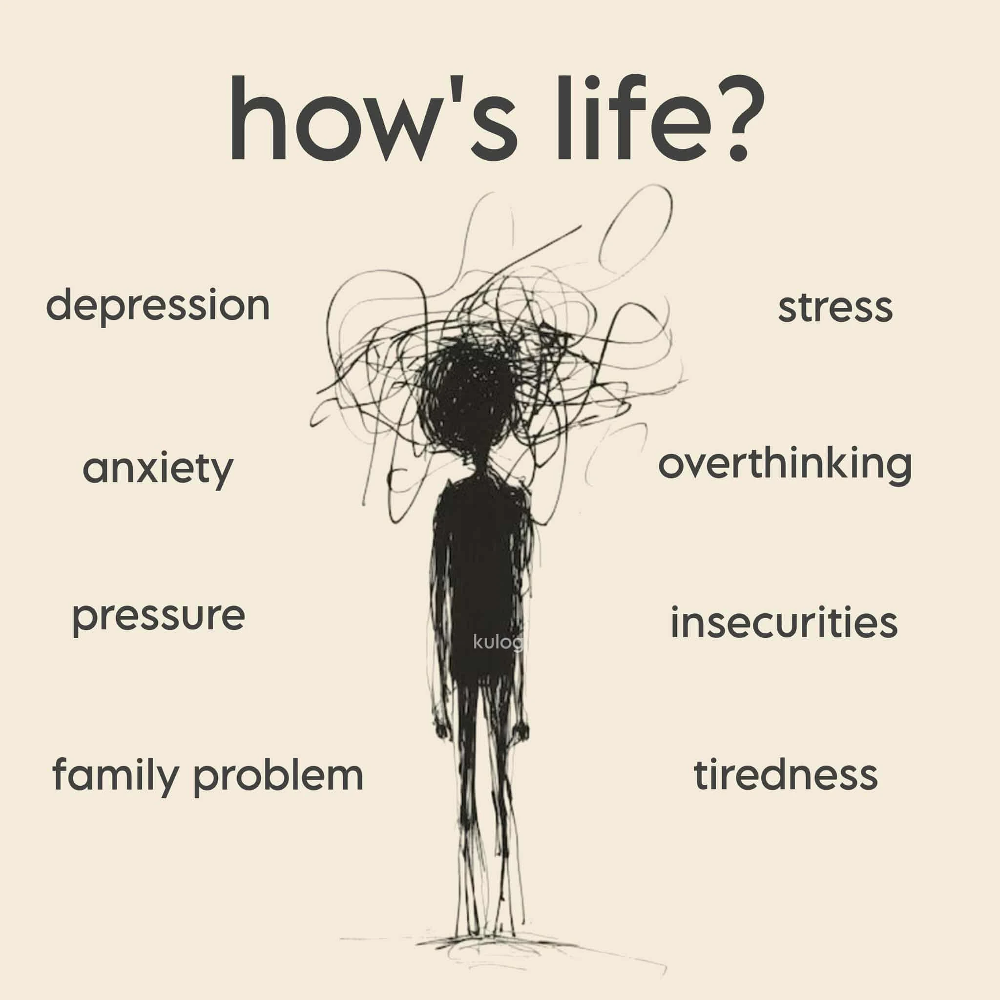
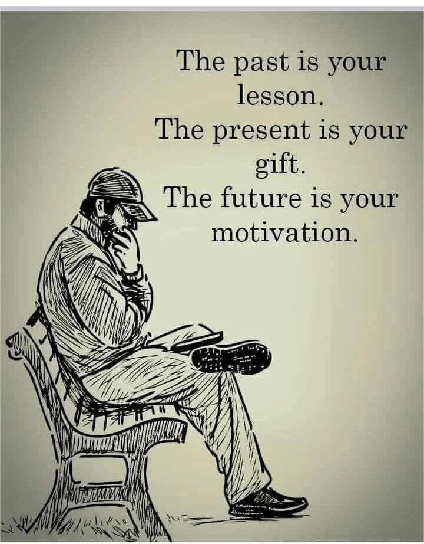

Survey Results & Emotional Insights
The Survey Results section transforms collected responses into meaningful information — turning raw emotional data into patterns of understanding. Each survey you complete contributes to a growing reflection of the mind’s landscape, allowing both you and others to visualize how emotion flows across experience.

Here, individual answers evolve into structured insights. Numbers, words, and emotional cues are analyzed to reveal recurring themes — patterns of happiness, sadness, anxiety, anger, or emotional neutrality. These results are not simply statistics, but living reflections of human psychology rendered into visual form.

Through data visualization, you can preview your results and compare them to collective emotional trends. This helps you identify shifts in your mindset, emotional stability, and growth over time. Each chart or graph symbolizes more than data; it is a mirror of the psyche evolving through awareness.
The system prioritizes privacy and respect — your responses remain anonymous while contributing to broader understanding. Your personal journey becomes part of a shared vision: a digital map of human emotion, built from honest self-reflection and psychological insight.

As data turns into knowledge, and knowledge into wisdom, this page serves as a testament to the beauty of introspection. Numbers may measure emotion, but meaning gives them soul. Every result, every point of data, is a story waiting to be understood.